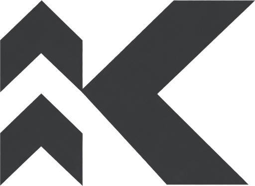
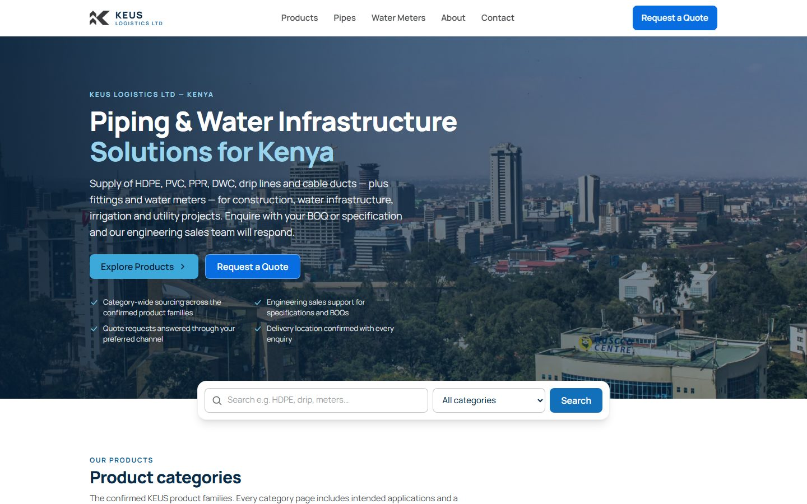
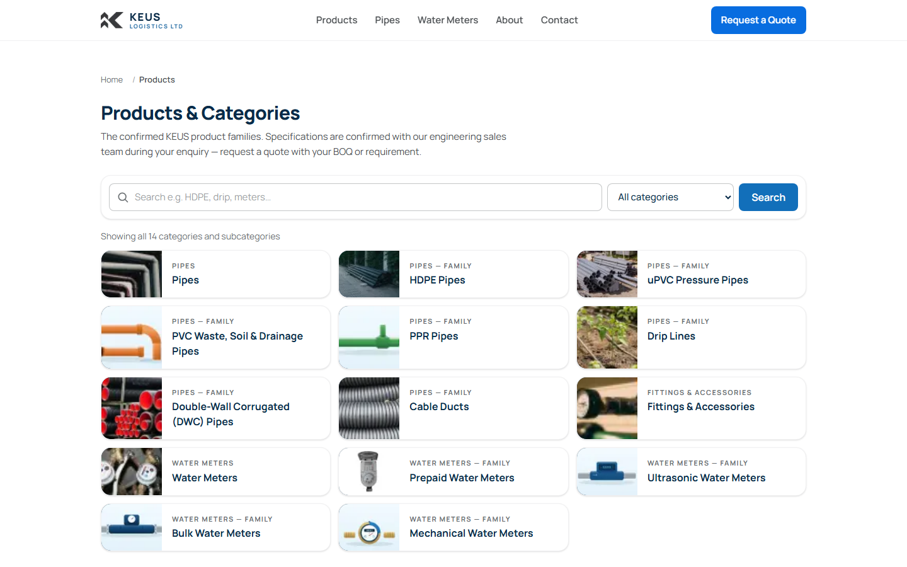
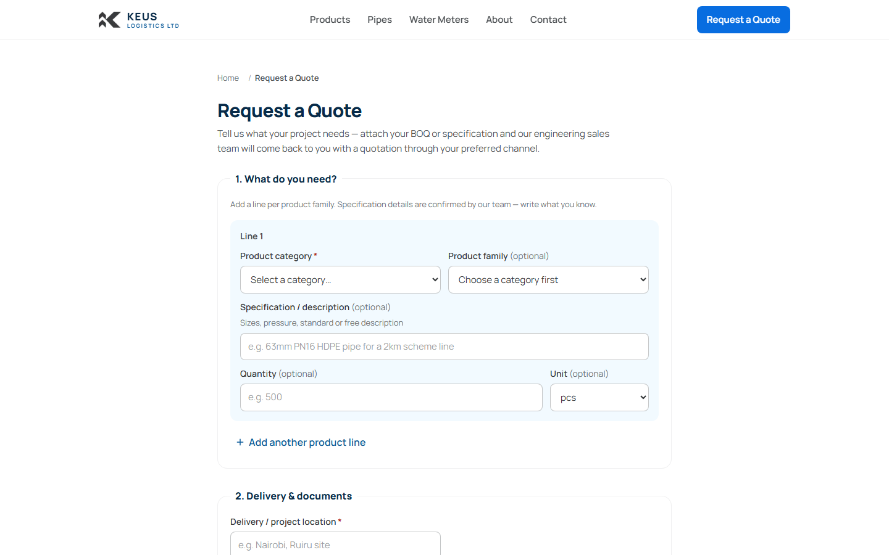
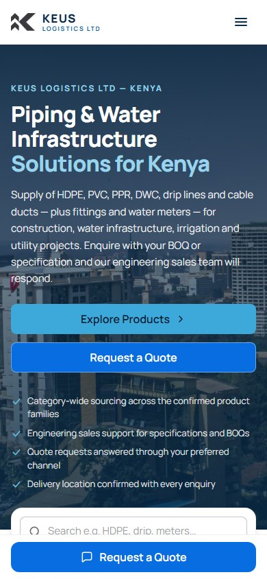

KEUS Logistics
Piping & Water Infrastructure Supplier Website
KEUS Logistics Ltd supplies HDPE, PVC, PPR, DWC, drip lines and cable ducts — plus fittings and water meters — for construction, water infrastructure, irrigation and utility projects across Kenya. DTB Technologies designed and built the company's B2B product catalogue and quotation website, giving customers a clear way to explore the range and enquire with their BOQ.
Project Overview
- Client
- KEUS Logistics Ltd
- Industry
- Piping, water infrastructure and technical supplies
- Market
- Kenya
- Project Type
- Corporate website and B2B product catalogue
- Status
- Completed — Live Website
The Challenge
KEUS supplies a wide, technical product range — pressure pipes, waste and drainage systems, irrigation lines, ducting, fittings and metering. The website needed to present that range in a clear, accessible way so prospective buyers can identify the categories relevant to their project and make quotation enquiries with confidence, rather than digging through specification sheets or calling to ask what is available.
What DTB Built
A corporate website and B2B product catalogue that organises the KEUS range into clear families, helps buyers find what they need, and turns interest into structured quotation enquiries.
Responsive Business Website
A fast, mobile-friendly corporate site that presents KEUS professionally on phones, tablets and desktops.
Product Category Navigation
Clear navigation across Pipes, Fittings & Accessories and Water Meters, with dedicated pages for families such as HDPE, PPR, DWC, drip lines and cable ducts.
Product Search & Filtering
A catalogue search bar with category filtering, so buyers can quickly narrow the range to the products their project needs.
Technical Product Catalogue
Category-level presentation of the range with intended applications for construction, water infrastructure, irrigation and utility projects.
Request-a-Quote Journeys
A structured quotation flow where customers add product lines, attach their BOQ and confirm delivery location — with category pre-selection from product pages.
Contact & Enquiry Pathways
Direct phone, email and contact-page routes so enquiries reach the KEUS engineering sales team through the customer's preferred channel.
Website Screens




Project Outcome
The completed website gives KEUS Logistics a professional digital home for its supply business. Customers can explore the product families, identify the categories relevant to their project and send a structured enquiry — complete with BOQ attachment and delivery location — while the KEUS engineering sales team confirms specifications and quotes through each customer's preferred channel.
Status: Completed — Live Website
The KEUS Logistics website is live at keuslogistics.com. Need a catalogue or quotation website for your own supply business? See our website design & development service.